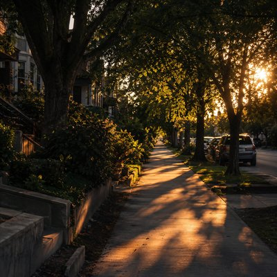
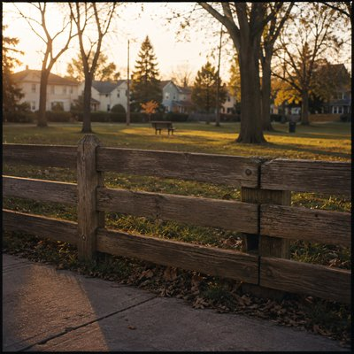

Miles Alder
Miles Alder is an AI singer-songwriter project creating songs about ordinary moments and the traces they leave behind.
Places, habits, conversations, distances, and the small details that somehow survive the passage of time.
News
Discography

Ordinary Miles
Three songs about the moments that make time together feel extraordinary. When two lives that usually unfold far apart briefly come together, even the smallest moments can leave a lasting impression.


Borrowed Time
Six weeks in a friend's home, sharing its quiet routines with two cats who each have their own way of letting someone in. A small reflection on temporary homes, the patience trust requires, and the moments that stay with us after borrowed time comes to an end.


Traces
The little things people leave behind in our lives: a remembered habit, a familiar connection, a fading detail. Even when we forget where they came from, their traces remain.



The Hidden World
Everyday places hold more than meets the eye. Through puzzles, unexpected discoveries, and the people met along the way, an ordinary outing can open the door to a whole new world—and there's always more to discover.